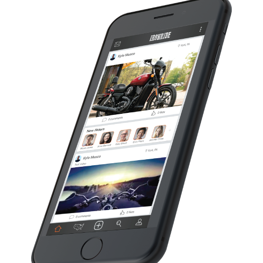
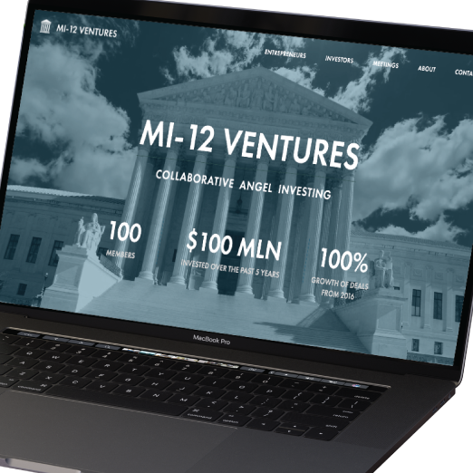
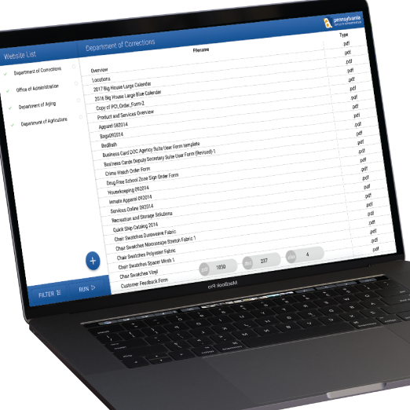

Projects
All
Hackathons
Hardware
Networking
Software

A laboratory management web application created for MRG Labs to streamline their analysis process. Navigator is used by several Fortune 500 companies.
FAST

A test administration and analysis platform designed for a psychologist. Provides immediate feedback for users and statistics for administrators.

An app for Harley Davidson owners to connect with other riders, find new rides and document their own.
An online store for Commonwealth Trailer Parts, a trailer part distributer.
MI-12 Ventures

A website for MI-12 Ventures, an angel investment firm.
Y-Fi is an initiative to provide free WiFi for downtown York City. I was awarded a $6000 grant to implement a mesh network that covers key downtown locations.
Moena LLC
Moena provides businesses a way to monetize their WiFi by allowing them to promote themselves and display 3rd party advertisements to customers as they browse the web.
I advised the student team and implemented an online account management system to manage email campaigns, handle travel and diet requests, and track attendance.
Spacefolio
My old portfolio website.
Quill
A fork of HackMIT's Quill project, branded for YCP Hacks. I added several features to improve user management and sending mass emails.
Greenhouse UI
A web application that monitors an automated greenhouse built for a local elementary school. Created as part of my Senior Capstone project.
Shuttle Tracker
A GPS tracker that uses WiFi probing requests to estimate how many people are on the shuttle. Posts location and number of riders to web application over 3G.
I was 1 of 4 students who organized York College's first hackathon at the Yorktowne Hotel.
YCP Hacks Website
I created the homepage for YCP Hacks 2016.
Webscraper

A webscraper to audit Commonwealth websites for Open Data compliance. Done for my internship with the Office of Administration for the Commonwealth of Pennsylvania.
Nixie Tube Clock
A clock that uses antique NI-14 nixie tubes. I built this from a kit to further my understanding of electrical engineering.
Robocar
A Raspberry Pi powered remote controlled car. Controlled by web application over WiFi.